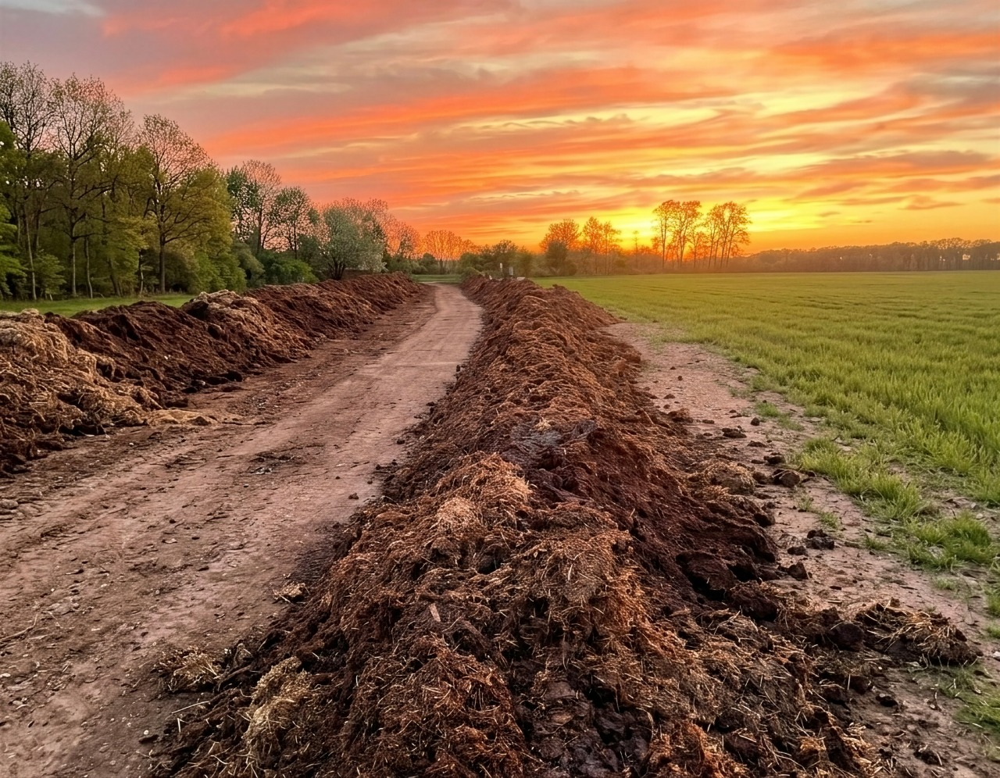
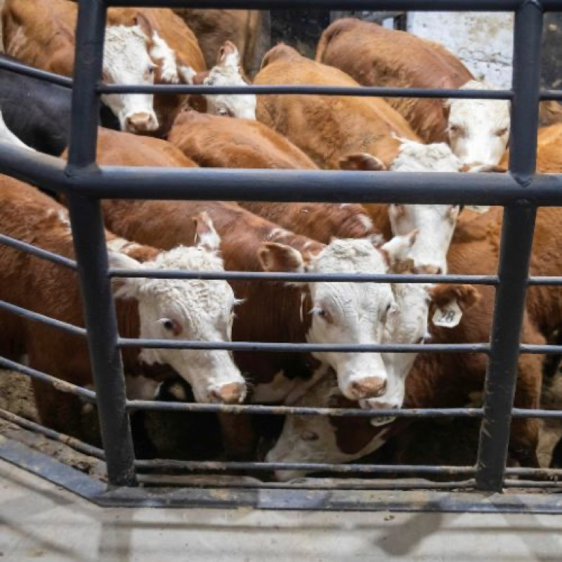
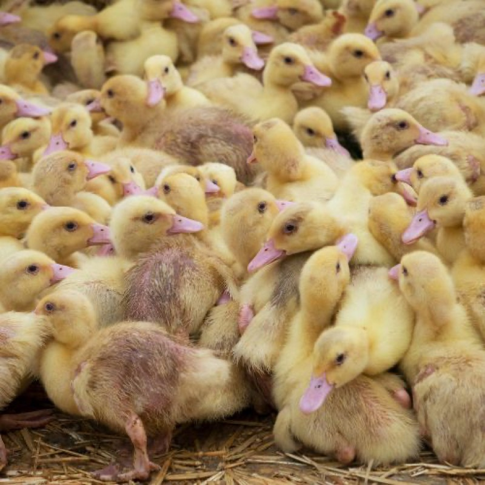
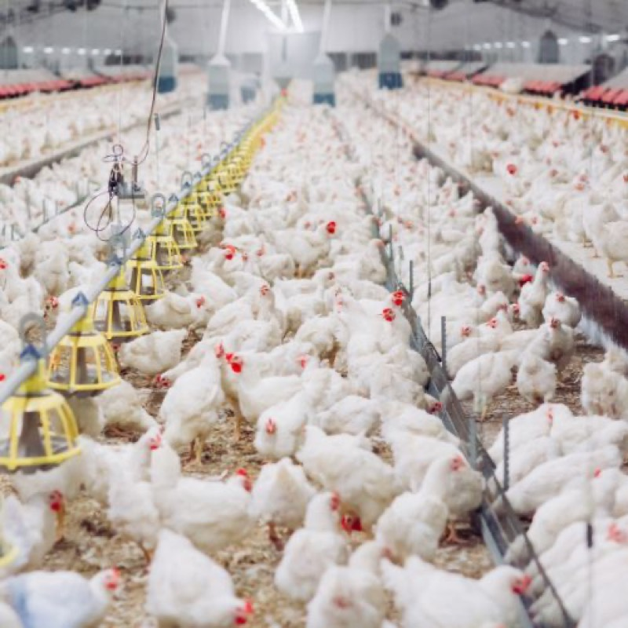
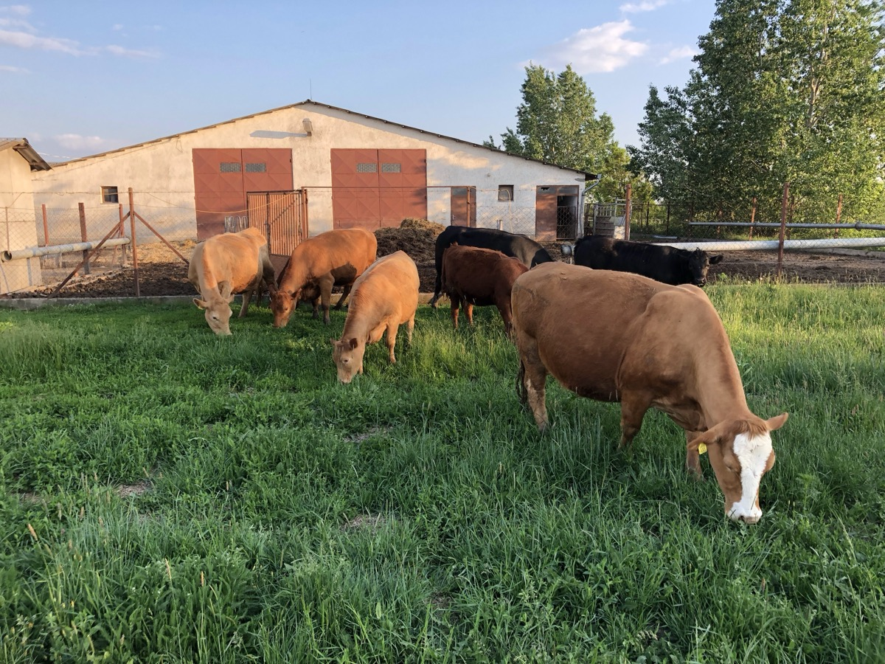
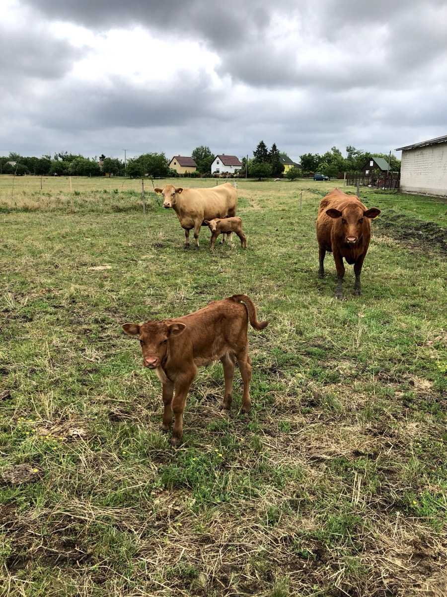

Igen, szart árulunk.
De olyan szart, amiért a paradicsomod könyörögni fog.
Hat hónapig forgatjuk, locsoljuk, figyeljük. Így mire hozzád kerül, már nem trágya, hanem fekete arany.
Nyugi, nem büdös. Erdőillata van, esküszünk.
A boltban kapható „komposzt" legtöbbször nem is komposzt.
Kinyitod a zsákot, és érzed: istállószag.
Vagy ami még rosszabb, semmilyen szag, mert kiszárították, agyonőrölték, és kivettek belőle mindent, amitől élő lehetne.
A kerted ezt megérzi. A paradicsom nem hozza, amit ígért, a rózsa levelei sárgulnak. A föld évről évre fáradtabb.
Az igazi komposzt nem termék, hanem folyamat, és ezt a folyamatot nem lehet siettetni.
Nekünk van türelmünk jó komposztot készíteni.
Ezért nálunk a komposzt nem futószalagon készül. Mi így csináljuk:
- Bekeverjük. A kacsa- és marhatrágyát forgáccsal, szalmával, szárakkal és levelekkel keverjük, amíg 30:1 szén-nitrogén arányt nem kapunk.
- Forgatjuk. Levegő nélkül a komposzt megrohad, levegővel viszont érik.
- Locsoljuk. 50-60% nedvességet tartunk. Mint egy kicsavart szivacs.
- 60 fokra forrósítjuk. Ez indítja be a hőkedvelő baktériumokat, és öli meg a gyommagvakat és a kórokozókat.
- Pihen 180 napot. Itt alakulnak ki a stabil, komplex szerves anyagok, amik utána évekig táplálják a talajt.
A végén már nem hiszed el, hogy valaha tehén volt benne. Sötét. Morzsalékos. Erdőillatú.
Miben más a mi komposztunk
Az igazi kérdés viszont nem is az, hogyan készül, hanem az, hogy honnan jön.
Az állat azt szarja, amit eszik. Ez nem mély gondolat, csak senki nem szokott rágondolni, amikor komposztot vesz.
A legtöbb kereskedelmi komposzt nagyipari hízlaldákból származik:
antibiotikummal kezelt állatoktól   
A mi komposztunk másmilyen állatoktól jön:  
- Kacsák. A kacsatrágya egy bio kacsafarmról származik, ahol emberségesen tartják az állatokat.
- angus és wagyu marhák. Egész életüket füvön, a saját bio legelőinken töltik. A hízlalás során is a saját bio gabonánkat kapják.
- dorper és racka anyajuh és bárányaik. Ugyanezen a legelőn, váltott területen, ahogy a régi pásztorok csinálták.
- Csirkék, szabadon. Sétálnak a marhák és juhok között, felcsipegetik, ami marad.
- Minden földünk bio-tanúsított. Vegyszer, antibiotikum, GMO sehol. Így a fönt említett „szén" is bio.
- Két komondor, akik mindezt őrzik. Az egyik tisztavérű, a másik kuvasz-keverék. Ők rendezik a békét.
Más a forrás, ezért más is a végeredmény.
Ez az egyetlen különbség, ami igazán számít.
Mit fog csinálni a kerteddel?
Őszintén? Megalázó dolgokat fog művelni a szomszédod kertjével szemben.
- 🍅 A paradicsomod erősebben indul. Nem varázslat, hanem élő talaj. A komposzt mikroflórája együtt dolgozik a növény gyökerével, ezt műtrágyával nem lehet ugyanígy pótolni.
- 🌹 A rózsák levelei kevésbé sárgulnak. Mert a talaj nincs kiéhezve. Nem csak NPK kell neki, hanem élet.
- 🥕 A sárgarépának íze lesz. Igazi íze. Olyan, amilyenre a nagyanyád emlékszik, és amit a boltban már nem kapsz, mert a tömegtermelés ezt elpusztította.
- 💧 Nyáron tovább tartja a vizet. A komposzttal javított talaj több nedvességet tárol. Aszályban ez nem apróság, hanem előny.
- 🌱 A palánta nem ég meg tőle. Mert érett. Nyugodtan tedd a gyökérre, cserépbe, tövébe. Nem fog kárt tenni.
- És nem fog büdösödni az udvarod. Mert ami hozzád érkezik, az már nem trágya. Az komposzt. A kettő között hat hónap és rengeteg munka van.
Akkor most mi legyen?
Háromféle ember olvassa ezt:
Egy utolsó dolog.
A jó kert a földben kezdődik.
A jó föld a komposztban.
A jó komposzt nálunk.
Hívj fel minket és megbeszéljük, mire van szükséged.
5400 Mezőtúr, Felsőrészinyomás 105.